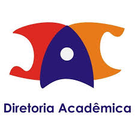

Notícias relacionadas aos alunos da FT
Mercado de Trabalho
O mercado de trabalho para os formandos da universidade está aquecido, com várias oportunidades em tecnologia, engenharia, e outras áreas. Confira as empresas parceiras e as vagas disponíveis.
Últimos Formados
Veja os alunos que recentemente se formaram em nossos cursos e os projetos desenvolvidos por eles. Inspire-se com as trajetórias e os destinos profissionais de sucesso de nossos ex-alunos.
Conheça as funcionalidades que você tem como aluno:

Estágios e Carreiras (SAE)
O SAE - Estágios e Carreiras conecta os alunos às melhores oportunidades de estágio e trainee, ajudando a construir uma carreira sólida durante e após a graduação. No site, você pode visualizar vagas, preparar seu currículo e participar de eventos voltados ao mercado de trabalho.